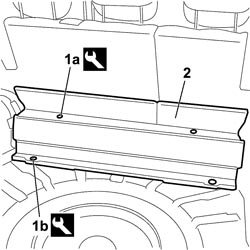

7040B20 BACK TRIM FOR LUGGAGE COMPARTMENT/LOAD PLATFORM - ARRANGE
- Path
- Procedures > 70 FITTINGS > 7040 BODY INTERIOR FITTINGS AND TRIM > 7040B LUGGAGE COMPARTMENT AND LOAD PLATFORM TRIMS > 7040B20 BACK TRIM FOR LUGGAGE COMPARTMENT/LOAD PLATFORM - ARRANGE
- Kind
- repair procedure (removal / refitting; the operation number is the code)
- Applies to
- all engines; all production periods
- Interactive page
- https://sloeber94.github.io/elrnDB-fCrm/en/#/194001034
Applies to: all engines; all production periods
 Removing
Removing
 Refitting
Refitting- Open the rear tailgate.
Op. 7040B10 LOAD PLATFORM (LUGGAGE PLATFORM) TRIM - R+R
1. Using the special tool, release the two retaining buttons (1a) and the two retaining studs (1b).
Tool | Description | Function | Validity |
|---|---|---|---|
1878077000 | Knife | Retainer removal |
2. Remove the rear trim for the luggage/load carrying compartment from its housing.

Applies to: all engines; all production periods
Refitting
Removing- Check that the rear trim for the luggage/load carrying compartment is not damaged.
- Position the trim correctly by the mounting points.
- Fit the two studs and the two retaining buttons in their seats.
Op. 7040B10 LOAD PLATFORM (LUGGAGE PLATFORM) TRIM - R+R
- Close the rear tailgate.